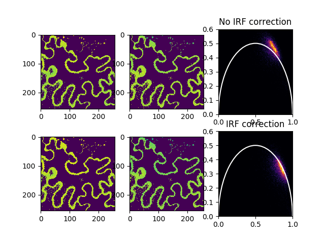

Note
Click here to download the full example code
Phasor analysis of images¶
For phasor image analysis the library fit2x provides functions

from __future__ import print_function
import tttrlib
import fit2x
import pylab as p
data = tttrlib.TTTR('../../test/data/imaging/pq/ht3/crn_clv_img.ht3')
data_mirror = tttrlib.TTTR('../../test/data/imaging/pq/ht3/crn_clv_mirror.ht3')
data_irf = data_mirror[data_mirror.get_selection_by_channel([0, 1])]
ht3_reading_parameter = {
"marker_frame_start": [4],
"marker_line_start": 1,
"marker_line_stop": 2,
"marker_event_type": 1,
"n_pixel_per_line": 256,
"reading_routine": 'default',
"channels": [0, 1],
"fill": True,
"tttr_data": data,
"skip_before_first_frame_marker": True
}
image = tttrlib.CLSMImage(**ht3_reading_parameter)
frequency = 32.0 # MHz
stack_frames = True
frequency_mt = frequency / (1000. / data.header.micro_time_resolution)
# No IRF correction
phasor = fit2x.phasor.get_phasor_image(
image=image,
stack_frames=stack_frames,
frequency=frequency_mt
)
n_frames = 1 if stack_frames else image.n_frames
phasor_1d = phasor.reshape((n_frames * image.n_lines * image.n_pixel, 2))
phasor_x, phasor_y = phasor[:, :, :, 0], phasor[:, :, :, 1]
phasor_x_1d, phasor_y_1d = phasor_1d.T[0], phasor_1d.T[1]
fig, ax = p.subplots(nrows=2, ncols=3)
ax[0,2].set(xlim=(0, 1), ylim=(0, 0.6))
a_circle = p.Circle(
xy=(0.5, 0),
radius=0.5,
linewidth=1.5,
fill=False,
color='w'
)
ax[0, 2].add_artist(a_circle)
ax[0, 2].hist2d(
x=phasor_x_1d,
y=phasor_y_1d,
bins=101,
range=((0, 1), (0, 0.6)),
cmap='inferno'
)
ax[0,0].imshow(phasor_x[0,:,:])
ax[0,1].imshow(phasor_y[0,:,:])
# IRF correction
data_irf = data_mirror[data_mirror.get_selection_by_channel([0, 1])]
phasor = fit2x.phasor.get_phasor_image(
image=image,
tttr_irf=data_irf,
stack_frames=stack_frames,
frequency=frequency_mt,
minimum_number_of_photons=30
)
n_frames = 1 if stack_frames else image.n_frames
phasor_1d = phasor.reshape((n_frames * image.n_lines * image.n_pixel, 2))
phasor_x, phasor_y = phasor[:, :, :, 0], phasor[:, :, :, 1]
phasor_x_1d, phasor_y_1d = phasor_1d.T[0], phasor_1d.T[1]
ax[0, 2].set_title('No IRF correction')
ax[1, 2].set_title('IRF correction')
ax[1, 2].set(xlim=(0, 1), ylim=(0, 0.6))
a_circle = p.Circle(
xy=(0.5, 0),
radius=0.5,
linewidth=1.5,
fill=False,
color='w'
)
ax[1,2].add_artist(a_circle)
ax[1,2].hist2d(
x=phasor_x_1d,
y=phasor_y_1d,
bins=101,
range=((0, 1), (0, 0.6)),
cmap='inferno'
)
ax[1,0].imshow(phasor_x[0,:,:])
ax[1,1].imshow(phasor_y[0,:,:])
p.show()
Total running time of the script: ( 0 minutes 4.975 seconds)